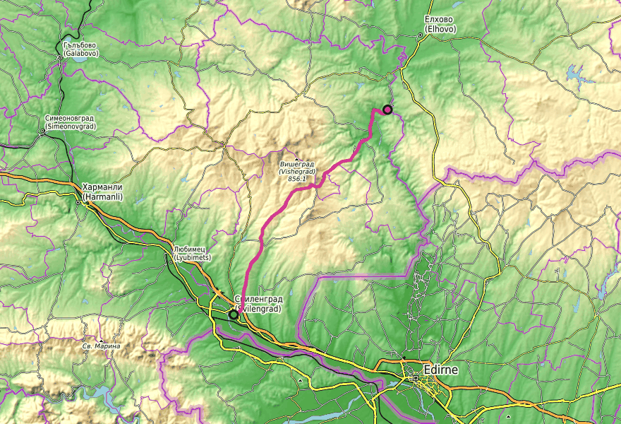
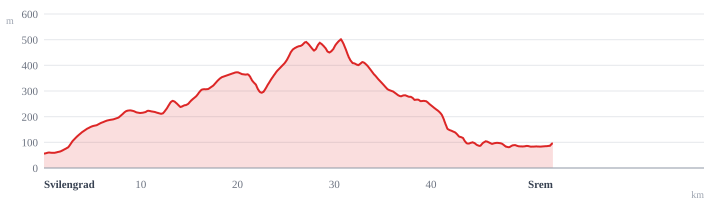

Leg 2 Sunday 24 May 2026 — Cyril & Methodius Day
The hard day — the day Sakar earns its mythology.


Today is Bulgaria's Day of Bulgarian Education and Slavonic Literature. Expect parades and ceremonies in Svilengrad's town square on the morning. Possible road closures in the centre until late morning — if you're leaving early from Svilengrad lodging you'll likely be ahead of them, but plan the exit route accordingly.
Leg 2 is the day Sakar earns its mythology. You roll out of Svilengrad — a transit town on the Maritsa, ringed by Ottoman silk-trade memory and the modern Greek-Turkish border — and within a few kilometres you're climbing into a landscape that has barely changed in two millennia. The first twelve kilometres grade you up through scrubby foothills to Levka, a half-empty village sitting on a medieval Christian fortress and a Bronze Age dolmen. From Levka to Studena and onward toward the ridge, the forest thins into open oak savanna — ancient downy oaks scattered through grazed pasture, no closed canopy, no fences. This is the ridge belt around km 24–36, peaking near 470 m: the wild peony, Ophrys and Orchis orchids, and the Eastern Imperial Eagle, mostly nested in exactly the lone oaks you'll be passing. Then it tilts down toward Mladinovo and through the descent toward Srem. The hardest day in metres climbed and the most rewarding in cultural and biological density.
Two thousand years in one stop. Above and around the village sit the remains of a fortress and town identified as a medieval archiepiscopal centre — substantial building foundations plus a large Christian necropolis, documented by the 19th-century Škorpil brothers, the Czech-Bulgarian pioneers who catalogued so much of southeastern Bulgaria. Within walking distance: a Bronze Age dolmen, one of several around Levka — granite slabs from the same Variscan batholith the village is built on. Same place, separated by two thousand years.
Open pasture dotted with scattered ancient Quercus pubescens (downy oak) and Q. frainetto (Hungarian oak), unfenced grazing of sheep and cattle, no closed canopy. This is the most distinctively Mediterranean-edge landscape you can ride in Bulgaria — a habitat type largely lost in central Europe. The lone oaks are nest substrate for Imperial Eagles and roost for Long-legged Buzzards; the understorey holds the orchids and peonies. The sensory payoff of climbing this leg.
Bulgaria's flagship raptor and a globally threatened species. National population is about 35 pairs; Sakar holds roughly eleven of them — the largest single concentration in the country. Imperial Eagles in Sakar typically nest on lone mature oaks in semi-open pasture — exactly the ridge habitat of this stretch.
Viewing heuristic: any pasture with a solitary mature oak visible from the track is candidate territory. Scan with binoculars. Listen for the harsh "kraa kraa" of pairs duetting.
Do not approach trees with eagle activity. Late May is late incubation and early hatching; human disturbance can cause nest failure. Look from the road.
Long-legged Buzzard: large, pale-headed, rusty-tailed. Soars on flat wings; perches on lone oaks and pylons. About 30–35 pairs in Sakar — the most visibly common large raptor on the ride.
Lesser Spotted Eagle: smaller, dark, with a diagnostic white "comma" at the wing base. Nests in oak stands at the ridge–forest edge.
Levant Sparrowhawk: small, pale, fast accipiter. Sakar is one of its core European territories. Identification cue in flight: very pale underwings with black wingtips that look "dipped in ink." Listen for the high "kewik-kewik" in oak stands.
A single dark-red flower 7–13 cm wide, with prominent yellow stamens — a knock-out plant when it's open. Native to the Tundzha Plain and the eastern Rhodope / Strandzha foothills (Sakar sits between them). Flowers end-April through June, peak mid-May. The local Bulgarian name is червен божур — red peony.
Tiny, surreal flowers. The labellum is velvety chestnut-brown with yellow markings, three-lobed, eerily insect-shaped. O. apifera is endangered in the Bulgarian Red Data Book; populations are scattered and small. Found in short-grass openings between oaks, especially on old grazed pasture.
Most of the Sakar massif is a single Late-Carboniferous granitic batholith (~306 Ma, ~450 km²) with a metamorphic mantle of gneiss, amphibolite and schist. The Levka Pluton (~319 Ma) is named after the village you ride through. This granite is the building stone of every dolmen on the route — the megalith-builders quarried local outcrops rather than transporting rock. The high ridge looks like savanna partly because of this geology: thin acid granite soils plus summer drought plus centuries of grazing produces an oak-grassland mosaic rather than closed forest. The geology produced the megaliths and the eagles.
Svilengrad sits on the Maritsa — the same river that becomes the Greek-Turkish border about twenty kilometres downstream, and the EU external boundary. The 1371 Battle of Maritsa was fought near here: an Ottoman victory that broke the Serbian noble alliance and set up Edirne, twenty-five kilometres south-east, as the Ottoman capital from 1369. The name Svilengrad ("silk town") comes from 19th-century silk weaving for the Ottoman market.
Today's leg is the character arc made geography: leaving the transit zone (busy, multi-ethnic, externally facing) and entering the static interior (depopulated, deeply Bulgarian, internally facing). At Levka, on the Bronze Age dolmen, look south. You're looking back at a corridor that has been an east–west thoroughfare for two thousand years.
Dolmen near Studena (km ~16–18): catalogued dolmen, granite slabs, rectangular chamber, often with traces of an antechamber. Together with the Levka cluster signals you're already deep in the megalith belt before the ridge.
Mladinovo (km ~24–30): small village at the foot of the high ridge, Svilengrad municipality. Likely transit point as the route enters the upper ridge. Small, partially depopulated; possibly a working fountain.
Other migrants back from Africa by late May: roller, hoopoe, bee-eater, golden oriole, turtle dove. Common on telephone lines through the more open agricultural sections.
Booted Eagle and Black Kite are also on territory by late May; both may be seen soaring with Long-legged Buzzards over the ridge.
The wider Hlyabovo dolmen group (Slavova Koriya, Byalata Treva, Avdzhika, Gaydarova Peshtera, Nachevi Chairi) sits on the northern slope of the Sakar — closer to Leg 3 than Leg 2. The signature dolmen, Nachevi Chairi, is best ridden to on Leg 3 morning with fresh legs and better light.
The Maritsa border-zone history: centuries of Ottoman caravan trade between Edirne and the Bulgarian interior crossed this corridor. Today's leg climbs out of the transit zone and into the static interior; ridge altitude is a measure of how far you've left the corridor behind.
Up on the ridge between Studena and Mladinovo, the soundtrack is wind through tall grasses, sheep bells from unfenced flocks, and occasional raptor calls — the harsh, dog-like "kraa" of Imperial Eagles and the higher "kewik-kewik" of Levant Sparrowhawks. Soaring birds against thermals in late morning: most likely Long-legged Buzzard (large, pale-headed) and Booted Eagle. Cuckoos call from the oak edges through May. On the ground, the wild peony is at or just past peak — its deep-red, single, plate-sized flower is impossible to miss; look in oak-fringe shade for late blooms. Smaller and more cryptic but more thrilling to spot: bee orchids and Orchis species in short-grass openings between the oaks — tiny, ground-level, protected. Insect noise rises through the day: cicadas start their drone by late morning; large swallowtails work the thistle patches. By the warm part of the afternoon, the ridge starts smelling of dry granite and the herb notes of oregano and thyme on rock outcrops.
The ridge oak-savanna belt, somewhere between Studena and Mladinovo. Get off the bike for twenty minutes where you can see a stand-alone old oak in pasture. Scan the sky. The view south to the Maritsa valley, the lone-oak / Imperial-Eagle signature, and the spring flora — nowhere else in Bulgaria stacks all of that in one place.
km 0–6 (Svilengrad outskirts): suburban exit on tarmac, traffic noise, agricultural land. Push through; eat in town.
km 36–46 (post-ridge descent): the "you've used your camera roll" zone. Descending fast, oak savanna giving way to scrubbier mixed land. Mladinovo on the way down is the first chance for water after the ridge.